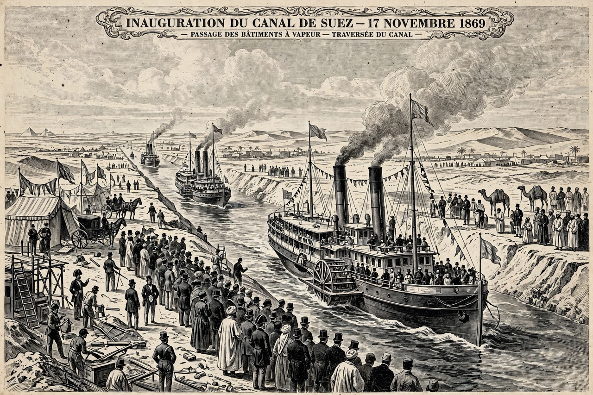

| Ferdinand de Lesseps | |
|---|---|
| Born | 19 November 1805, Versailles, France |
| Died | 7 December 1894 (aged 89), La Chesnaye, France |
| Occupation | Diplomat, entrepreneur |
| Known for | Building the Suez Canal; attempted Panama Canal |

Ferdinand Marie, Comte de Lesseps (19 November 1805 – 7 December 1894) was a French diplomat and later developer of the Suez Canal, which in 1869 joined the Mediterranean and Red Seas, substantially reducing sailing distances and times between Europe and Asia.
As a young vice-consul in Alexandria in the 1830s, Lesseps read Napoleon's survey reports and conceived the idea of a sea-level canal across the Isthmus of Suez. Years later, after befriending Sa'id Pasha, the Ottoman viceroy of Egypt, he obtained concessions in 1854 and 1856, raised capital through the Compagnie de Suez — largely from French small investors — and began construction in 1859. The canal opened triumphantly on 17 November 1869.
Hailed as "the Great Engineer", Lesseps in 1879 took up the challenge of a Panama Canal. His sea-level plan foundered on disease (yellow fever and malaria killed thousands of workers), engineering difficulties and financial mismanagement; the company collapsed in 1889 in France's largest bankruptcy, the Panama scandal. Lesseps and his son Charles were convicted of fraud and bribery, though the elderly Lesseps never served his sentence.
See also: Suez Canal · Panama Canal · Panama scandals